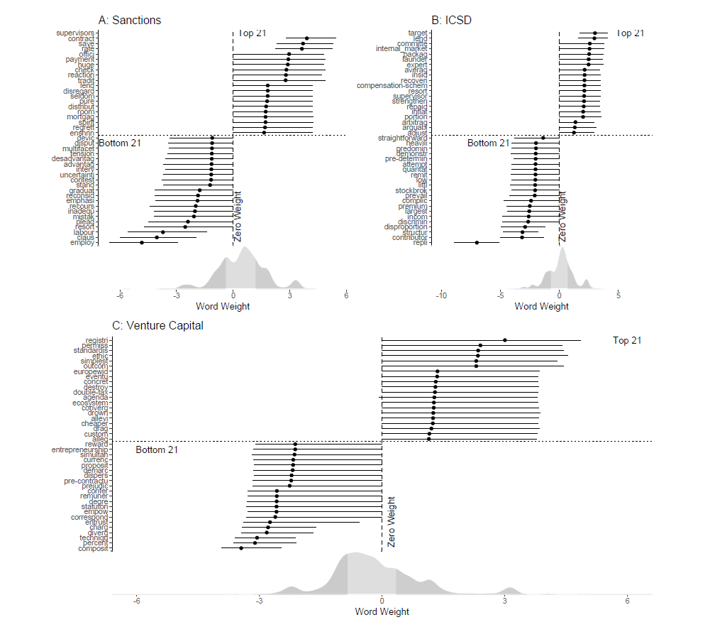

My research interests revolve around four main themes. The common denominator is an interest in whether and why decision-makers respond to pressures from different groups in society: 1) Political connections and corporate political influence, 2) revolving door politics, 3) responsiveness to the mass public and 4) measurement.
Below, I detail my research within each topic.
Political Connections and Corporate Influence on Public Policy
Most people expect that the political activities of companies matter, but existing evidence has only sparringly supported this belief. My research on this topic revolves around two agendas: 1) Firms may not care about the content of legislation if they can change the way it is enforced – and they can use political connections to this end. 2) I draw on a wide range of new data sources to capture various ways in which firms can influence policy outcomes, and match this to firm-level finances.
Awarded the Stigler Dissertation Award by the Stigler Center at the University of Chicago’s Booth School of Business.
I investigate the effect of political connections on regulatory forbearance by examining the interactions between firms and the Internal Revenue Service.
For fear of retribution, agencies may enforce rules more leniently against firms with political connections. I test the argument as it pertains to the enforcement of tax policy by the Internal Revenue Service (IRS). I compile a novel database of publicly listed firms, that have hired Members of the US Congress (MCs) in any capacity in the period 2004-2015. I present evidence that hiring a former MC decreases the average company’s tax rate by a large margin relative the the changes, the average firm normally experiences. The reduction is short-lived, but yields meaningful tax-savings for the individual firm, while only modestly impacting public finances. I show that the effect is driven by the MCs, who have the strongest political connections, and served in committees with oversight of the IRS. I present suggestive evidence that firms that hire highly connected MCs substitute away from traditional forms of lobbying, and are invited to hearings more often. This is likely to pressure the IRS in their decision-making. These results indicate that firms can use the revolving door to pursue significant economic rents.
Leveraging the staggered pattern of appointments into the Trump administration in a difference-in-difference design, we estimate the returns to connections to key rule makers in the bureaucracy for lobbying firms.
A growing body of research examines the transition of government employees into the private sector, commonly known as the revolving door. A common conclusion in this work is that government employees cash in on their experience and, most importantly, their connections to current officials. We focus on two under-studied aspects of the revolving door: 1) the transition of lobbyists back into government and 2) the value of connections between lobbyists and government agencies. Exploiting the unexpected victory of Donald Trump in the 2016 presidential election and the staggered timing of appointments into his administration, we find that firms whose lobbyists went back through the revolving door saw 20-70% increase in revenue, and the increase was larger in Democrat-leaning firms. Our results shed light onto the political economy of the lobbying industry and suggest a need to further study the interaction between lobbying firms and the federal bureaucracy.
With Mogens K Justesen, Copenhagen Business School
Using firm-level data on petitions for antidumping protection from 22 WTO jurisdictions, we revisit the classical question of whether firms with specific assets gain more protection. We also investigate intra-industry spill over effects.
We examine the role of firms in shaping trade protection. Firms with specific assets find it more costly to reorganize production in the face of international competition, which makes them lobby more intensively for protection. But decision-makers will not grant unlimited trade protection. This forces companies to compete for protection, which causes it to diffuse within groups of same-good producers. To test this argument, we combine antidumping petitions with financial data on the firms filing them in a unique dataset. Using spatial autoregressive models, we show that companies with specific assets are more likely to be successful when petitioning for antidumping protection and that this decreases protection afforded to competing firms.
We use automated text scaling to construct a measure of lobbying success and match it to firm-level financial resources. Thereby, we provide quantitative evidence of a link between firm size and lobbying success.
This study presents the first firm-level quantitative evidence that companies with high operating performance are more likely to persuade the EU Commission to adhere to their preferences. We do this by collecting data on individual companies active across 45 consultation procedures from 2005-2013 on issues related to the internal market in the EU, totaling more than 300 companies. We propose three distinct mechanisms accounting for the association: companies with high operating performance are 1) able to conduct investments in the economy, upon which decision-makers rely 2) likely to be knowledgeable about their respective sector – information which decision-makers demand 3) capable of mounting opposition if decision-makers are unresponsive to their needs. Our results support the first proposed mechanism: politicians are more responsive to companies with high operating performance as it allow companies to invest in employment opportunities. Finally, we show that high salience of an issue, following times of crisis, significantly limits the influence of big business.
Revolving Door Politics
It routinely attracts both attention and condemnation, when elected officals leave office to take jobs in the private sector. Despite this, we know very little about, whether the so-called revolving door between business and politics changes policy outcomes. In my dissertation, I investigate how the potential for lucrative post-elective employment shapes the behavior of US Members of Congress.
I investigate the effect of private sector career prospects on whether US senators choose to walk through the revolving door.
While it is often conjectured that private sector salaries lure elected politicians out of public service, no quantitative evidence exists on this proposition. If private sector actors compete with the electorate for the labor of high-skilled politicians, it would have important implications for representative democracy. I argue that legislators gauge their private sector career prospects by observing how successful their former colleagues, who now work as lobbyists, are. I document that when career prospects improve, so does the probability that senators take a lobbying job. There is no effect immediately before a senator’s pension scheme improves. Senators, who retire from working life after Congress or are elected to a safe seat, are also unaffected. Finally, senators, who have sponsored the least bills and are more absent for floor votes, are affected the most. All of this indicates that senators react to opportunity costs associated with being in office.
I examine how the legislative behavior of senators change, when they are about to walk through the revolving door. I find that they vote differently, write more business-friendly bills, and exert more effort.
I investigate how the revolving door affects voting in the Senate. The literature on final-term problems suggests that senators should become more extreme before they leave office, because they no longer are accountable to voters. Lack of electoral accountability could, however, have different effects depending on the senator’s career ambitions. While retiring senators are no longer accountable to anyone but themselves, revolving door politicians will be accountable to their future employers, because they depend on them for post-elective employment. During their final Congress, this should lead revolving door senators to moderate themselves, while retiring ones should grow more partisan. Using data on post-elective career trajectories from 102nd to the 113th Senate, I present fixed effects estimates that back this claim. I show that the effect is driven by senators, who choose to resign, and provide evidence suggesting that the shift happens, because senators anticipate the preferences of their future employer.
(Invited to revise and resubmit at the Urban Affairs Review)
With Martin Larsen, Aarhus University.
We show that local fiscal policy in Denmark responds strongly to voter preferences. The effect of a preference changes lasts as long as nine years into the future.
Municipal governments supposedly empower citizens, giving them the ability to shape the political organization of their local community. In spite of this, we know little about whether municipal governments are in fact responsive to the policy views of municipal electorates. In this study, we look at whether the policy implemented by local politicians actually responds to changes in the public mood. To do this, we compile a unique and comprehensive dataset of local fiscal policy, which we use to construct municipal-level estimates of fiscal policy conservatism. This detailed policy data is then linked to an indicator of local ideological sentiment. We find strong evidence for dynamic responsiveness: when preferences in a municipality changes public policy responds.
Political Methodology and Measurement

Scaling Political Positions from Text – Assumptions, Methods and Pitfalls
With Robert Klemmensen, University of Southern Denmark
Invited chapter for: Luigi Curini & Robert Franzese (Eds.): SAGE Handbook of Research Methods in Political Science & International Relations (Forthcoming).
We review standard methods for scaling political positions from text. We outline how the techniques relate to measurement theory in general, review assumptions and illustrate their use.
In this chapter we review the different automated techniques for scaling text most commonly used in political science. We start by relating text scaling to the broader field of measurement models aimed at estimating latent positions. Through this comparison, we outline the assumptions underlying the scaling of political text. We proceed to show how the most commonly used scaling techniques build statistical models of text through these assumptions. In doing so, we also show the utility of the various techniques as well as their vulnerable spots. We then focus on two assumptions that are common across all techniques: that the texts are sufficiently a) long and b) similar in the way meaning is ascribed to words. Through simulations, we investigate how sensitive various techniques are to violations of these assumptions. We conclude by discussing how the need for awareness about model assumptions illustrates how automated scaling should not replace human judgement. We also discuss how a) techniques for estimating word and text embeddedness may improve our scaling techniques by incorporating context, and b) the need for conceptualizing measurement error arising from wrong models.